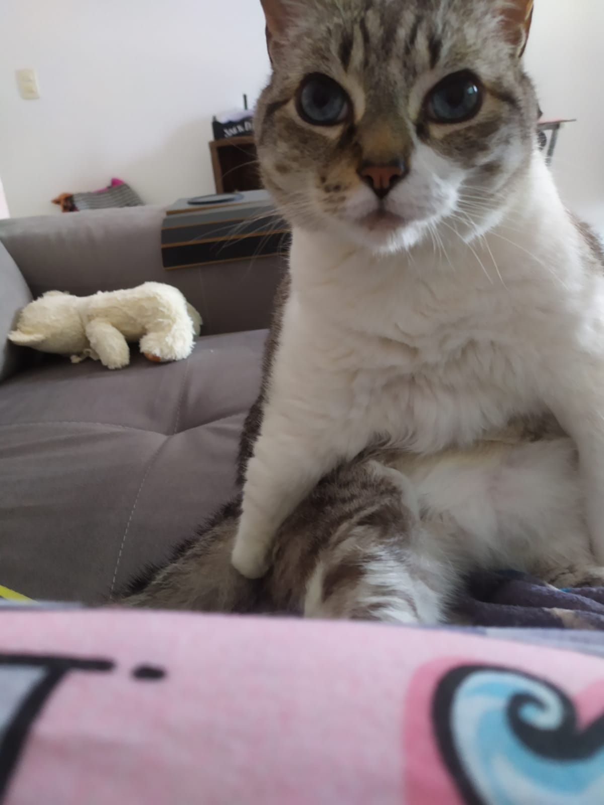

Oi, eu sou o Josef Climber. Tenho 7 anos de idade. Nasci em Horizontina, no Rio Grande do Sul.
Meu principal hobby é dormir ao sol.
Já morei em várias cidades no Rio Grande do Sul e agora estou em São Paulo.
Adoro andar de carro e em 2022 fui à praia curtir as praias de Ubatuba, em São Paulo.
No final do ano, atravessei metade do país e curti a cidade de Curitiba. Também passei por Porto Alegre, fui a um show particular em Tenente Portela e, é claro, visitei minha cidade natal.
Gosto muito de me sentar no sofá e nas poltronas, e adoro um ar condicionado ou aquecedor.
